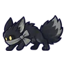
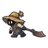
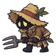
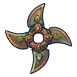
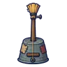
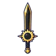
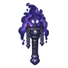
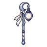
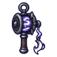

ไร่เงียบงัน
ดูบนแผนที่และวิธีไป วางแผนฟาร์ม
ชั้นล่างในดินแดนเหนือ · Lv 60–72
ชั้นล่าง / ดันเจี้ยน
เดินต่อไป
มอนในแมพ (6)
| มอน | Lv | ธาตุ | โซน |
|---|---|---|---|
 จิ้งจอกเงียบงัน | 60–70 | มืด | กังหันลมหยุดหมุน |
| 60–67 | มืด | ||
 ชาวนากลวงไถนา | 62–72 | อมตะ | กังหันลมหยุดหมุน |
| ชาวนากลวงไถนา · ร่างสนิมแดง | 62–72 | อมตะ | |
 ชาวบ้านกลวง | 62–72 | มืด | กังหันลมหยุดหมุน |
| 74–74 | ดิน |
อุปกรณ์ที่ดรอปในแมพนี้
| ของ | โอกาสสูงสุด |
|---|---|
| 0.5% | |
 ดาวยักษ์บรอนซ์โบราณ | 0.25% |
| 0.24% | |
| ชุดนักเดินเรือดาว | 0.15% |
| ชุดพรานกวางเอลก์ | 0.15% |
| 0.12% | |
| 0.12% | |
| 0.12% | |
| 0.12% | |
 เครื่องดนตรีกะละมังชาวไร่ | 0.12% |
| 0.06% | |
 ดาบสุริยุปราคา | 0.06% |
 คบเพลิงไฟเงา | 0.06% |
 ตะเกียงดวงจันทร์น้อย | 0.06% |
 ด้ายเหล็กภูตหมอก | 0.06% |